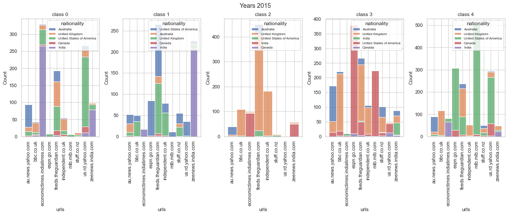

What data are we working with?
Our analysis will be based on QuoteBank Dataset - a dataset of quotations from 2015 to 2020 and WikiDataset, which provides data on the speakers - age, gender and nationality. We will try to analyze these characteristics of the speakers and draw certain conclusions.
Topics in the press
We will begin with the analysis of topics. Quotes in our dataset belong to one of 5 categories - business, entertainment, politics, sports, technology. Which topic is the most discussed and widespread in general and worries people the most?
Take a look at these plots. Here in the figures 0 denotes business, 1 - entertainment, 2 - politics, 3 - sport and 4 - tech.
So, we can say that the most discussed topic is sports and the least discussed is politics.
And the ratio of different topics is quite similar by year.
What characteristics should a speaker meet in order to be quoted in the press?
What kind of person should be in terms of age, gender, nationality to be mentioned in the press? Who is most likely to be quoted? Quite interesting question. Let’s discuss the answer to it.
How old do you have to be to get into the press? For business and politics topics, the largest proportion of quotes are from people born between 1941 and 1980. In that case you are an extremely “serious” person in the eyes of the press and public can trust your words, that’s why your quote will be about political or business topics. If you are relatively young - born between 1981 and 2000 - if you will be quoted, it is most likely in the topics of entertainment, sports or technology. But if you are younger, being quoted will be very difficult.
What gender do you have to be to be quoted? As we have seen, cisgender man are the most quoted in all 5 topics. If you are a cisgender woman, then it will be much more difficult to see your quote in the press and most likely your quote will be about entertainment or politics. If you are a genderqueer person, it will be extremely hard to get into the press.
In terms of nationality, first of all, it should be mentioned here that, since we are considering English-language sources, it is obvious that you can most likely be quoted if you are from English-speaking nationalities - USA, UK, India, Australia and Canada. If you are from the USA, you can be quoted in any topic, from the UK - then your quote is most likely to be about politics. It should also be noted that, in general, topics such as business, sports and technology are the most variable in terms of the speaker’s nationality, it is easier to get into the press here. But topics related to entertainment and politics are much more selective in terms of the nationality of the person being quoted.
Now you understand what qualities a person should have in order to be quoted.
Is there any discrimination in the press based on age and gender?
Discrimination occurs in all areas of our life. The press was not spared either. Let’s comment on this observation in more detail.
The age analysis gave quite expected results - the youth is significantly underestimated. This is especially evident for people born after 2000, who are underestimated in all topics. Thus, this generation of young people is turned off in the press even from entertainment and sports, which is largely their prerogative. Also, the example of people born in 1980 - 2000 shows that young people are mainly represented in the topics of sports, entertainment and technology, but less represented in more serious and responsible topics - in politics and business. And this trend continues from 2015 to 2020. This is explained by the fact that due to their young age, the press does not attach weight to words of young people. But this bias towards older people reinforces the stereotype in the consciousness of society that youth activities are entertainment, but not participation in the economic and political life of the country. Attention to thoughts of young people in this area is the important task of the press.
Is there discrimination against gender of speakers in the press? Unfortunately, we have to answer that yes. As expected, the speakers are largely cisgender males, and much less cisgender females, genderqueer people are significantly underestimated. In general, such an unbalanced sex ratio is observed in all topics and for all years from 2015 to 2020. According to the data for this period, the largest share of quoted women is in the topic about entertainment and is even less than one third of all quotes in this category! But over time we get a decrease in the number of men and an increase in the number of women, which can be considered as a positive sign. However, the representation of genderqueer peoples remains insignificant.
The press is a powerful tool for controlling a person’s consciousness, and in many ways the press influence what kind of thoughts people will have in their heads. Don’t underestimate the press in the fight against discrimination based on age or gender!
Which nationality prevails on different news resources?
Is there any link between the news resource and the nationalities of the speakers represented in it? Undoubtedly, and a very strong and defining dependence.
Take a look at the distribution of the 5 most represented nationalities for 2015 for various topics and the 10 most common websites. Here in the figures class 0 denotes business, 1 - entertainment, 2 - politics, 3 - sport and 4 - tech.

Let’s analyze in more detail the distribution for, for example, sports topics. There are a lot of representatives of UK on such websites as bbc.co.uk, feeds.theguardian.com and independent.co.uk, on the websites espn.go.com and mlb.mlb.com the main part of speakers are from USA, on au.news.yahoo.com Australia is widely represented. Do you see any pattern?
For other topics and other years, we have similar observations. That is, we can conclude that the most presented nationality is that of the origin of the website.
Does the representation of nationality change over time?
Let’s take msn.com website.
What changes in the national composition do we observe? For example, the proportion of speakers from India has been declining significantly over the years. This can be interpreted as a sign of potential discrimination against representatives of this country in the press.
Msn vs Breitbart


What can we do with our analysis of the speaker’s age, gender and nationality? Can we do something more than just statistical analysis, for example, some kind of application? Yes, of course! For the 2 main news resources, using data on age, gender and nationality of 2015-2019, we can predict the representation of minorities in these characteristics in 2020 and compare the predictions obtained with the actual data of 2020.
Next, we found the 2 most common news sources in the dataset - Media Bias/Fact Check (Msn) and Breitbat News (Breitbat). Generally speaking, our choice of sites is extremely good - also by the fact that they represent 2 opposing political opinions, one is left-centered and another one is far-right.
According to Wikipedia, the content of Breitbat News is called “misogynistic, xenophobic, and racist”. That is, we can assume that the representation of minorities on this site will be significantly underestimated.

As a minority, we will choose the speakers
-
with a date of birth between 1981 and 2020,
-
cisgender female,
-
all nationalities except the USA, UK, India and Australia.
Let’s move on to the actual prediction. We will use a frequently used machine learning method - linear regression, based on the data for all news sources in 2015-2019.
For a visual representation of the results, we will build plots for age, gender and nationality prediction for each topic, on which we note the obtained regression line, as well as the actual percentage of the minority across all news sources and for 2 selected ones.
How much will our expectations correspond to reality? Let’s take a look!
Age prediction
We observed that for business and sports topics, both new sources quoted more representatives identified by us as an age minority than the linear regression predicted.
For the topics of entertainment, politics and technology - the situation is the opposite - our prediction is greater than the real percentage of quotations.
It should also be noted that both news sources turn out to be better or worse than predicted percentage, and while Msn is closer to the prediction, Breitbart deviates more.
Gender prediction
Here we observed that in the topics of business, entertainment, sports, politics, Msn quotes significantly more cisgender women than the percentage predicted by linear regression, and Breitbart less.
Only in the topic of technology Breitbart exceeds the predicted percentage and exceeds Msn.
In general, the sexual minority is significantly less represented in Breitbart, which can be explained by its political orientation.
Nationality prediction
Here we found that in the topics of business, sports and technology, Breitbart shows a larger percentage of national minorities, while Msn shows a smaller percentage. For politics, the actual share turns out to be less than predicted for both new sources, and for entertainment topics - more.
Why does a news site like Breitbart, despite its characterization as “misogynistic, xenophobic, and racist”, often exceed our prediction and a more democratic site in terms of quoting minority representatives?
Let’s discuss it!
First of all, it is worth noting that the issue of age discrimination is not particularly acute in the society, and often, relative tolerance is shown to representatives of minorities of this category. Therefore, here the overestimation of the quotations is explicable.
But on the issue of gender, aggression and harassment in society are much higher. And here this news source corresponds to its characteristics - the percentage of quotations of minorities is less than our prediction.
As for nationality, Breitbart turned out to be loyal in many topics, but not in politics. As expected, nationality plays a big role in politics.
In addition, it should be noted that the high quotation of minorities does not mean that their discussion is in a positive way. It would be of interest to further develop this idea in terms of sentiment analysis.